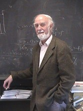

Please note: the AAS Obituaries are temporarily being hosted on this website while their full content is being ingested into the PubPub publishing platform newly adopted by the Bulletin of the American Astronomical Society. When the migration is complete, your existing links will take you to the final, migrated content. Contact peter.williams@aas.org with any questions.
Alexander Dalgarno (1928-2015)
Alex Dalgarno’s major contributions to the understanding of fundamental atomic and molecular processes enabled him to develop diagnostics of the physical conditions of atmospheres and astrophysical sources and to elucidate the roles of such processes in controlling those environments. He greatly influenced the research of physicists, chemists, atmospheric scientists, and astronomers, leading Sir David Bates to write, “There is no greater figure than Alex in the history of atomic physics and its applications.”
Alex was born and grew up in London. As a child, he enjoyed mathematical puzzles and did well at sports. He was invited to try out for the Tottenham Hotspur soccer team, but his professional sporting career ended due to an injury, which did not prevent Alex playing tennis and squash into his ninth decade.
In 1945 Alex began to study Mathematics at University College London (UCL). In 1947 Sir Harrie Massey invited him to work for a PhD in Physics and suggested that Alex investigate collisions of metastable helium atoms in helium gas to determine the cross sections for excitation transfer. Richard Buckingham was Alex’s immediate supervisor.
After completing his graduate study in 1951, Alex became a member of staff in Applied Mathematics at the Queen’s University of Belfast (QUB). He served as the Director of the Computational Laboratory after a 1954 visit to MIT, which had an electronic computer, led Alex to persuade colleagues that QUB needed one.
In 1957, the poet Philip Larkin was the best man at the marriage of Alex to Barbara Kane. They had four children, Fergus, Penelope, Piers, and Rebecca, but the marriage dissolved after ten years.
Alex’s important work during the 1950s on the quantitative evaluation of long-range interactions underpinned his collaborations on precise scattering calculations relevant to ultra-cold collisions and the formation of atomic Bose-Einstein condensates over four decades later. He investigated the theory of atomic and molecular collisions and calculated charge transfer cross sections. Some of these proved later to be important for forming the spectra of diffuse astronomical matter surrounding high mass stars and 100 million solar mass black holes at the centers of active galaxies. In the early 1950s David Bates stimulated Alex’s interest in the study of quantum processes occurring in the upper terrestrial atmosphere. Together they considered the sources of the nightglow and dayglow features and concluded that the altitudes previously inferred for them from observations were up to several hundred kilometers too large. Experiments carried on V2 rockets, like those seen by Alex in wartime London, proved him and David to be right.
Alex felt that though many theorists believe that “physics is embodied in its equations,” it is instead “to be found in the solutions to the equations.” He was a master at developing and applying methods that simplified calculations leading to reliable solutions. Exploiting the contemporary advances in electronic computation, by the 1960s Alex and his colleagues were able to address atomic and molecular processes of increasing complexity. Their development and early applications of the S-matrix theory of molecular rotational excitation by particle impact triggered major advances in molecular physics and theoretical chemistry and in the understanding of processes important in many environments, including a wide variety of astrophysical sources.
In 1967 Alex became a professor in the Harvard Department of Astronomy and a member of the staff of the Smithsonian Astrophysical Observatory. He was a team member for several Atmosphere Explorer satellite missions, which elucidated the roles of atoms and ions in the upper atmosphere and paved the way for further applications to the other planets. By 1969 Alex was publishing papers on molecular hydrogen (H2) radiative processes, including photodissociation, in which the foundations of molecular astrophysics began to emerge. H2 is the most abundant astrophysical molecule and the main constituent of the regions where stars form. Interstellar H2 was first detected directly in the following year, and data for interstellar H2 began to become abundant in 1973. Alex was well prepared and led efforts to interpret these data, from which he was able to infer the physical properties of diffuse interstellar molecular clouds. At nearly the same time he was involved in work on the ionization and energy deposition in H2 by nearly relativistic and relativistic particles called cosmic rays. The work has relevance to emission in the atmospheres of the giant planets, as well as for conditions in interstellar molecular clouds. Cosmic ray induced ionization initiates much of the basic chemistry in star forming regions, and the emissions of the product molecules control the temperatures and allow the diagnosis of the physical conditions and dynamics of the stellar nurseries. For more than four decades Alex elucidated the chemical networks governing the molecular abundances in a wide variety of astrophysical sources including star forming regions, supernova ejecta, the pregalactic universe, and extreme environments like those in the vicinities of X-ray sources powered by accretion onto black holes. The refinement of the models led to calculations predicting the existence of subsequently discovered negative ions in giant molecular clouds. One of his astrophysical interests that intrigued him late in his career was the emission of soft X-rays by comets and in the heliosphere due to charge transfer with solar wind particles, and he also worked on related processes occurring in the atmospheres of the giant planets.
Alex remained very active in fundamental atomic and molecular physics, as well as for its applications to astrophysics and to terrestrial and extraterrestrial planetary atmospheres. Ultra-cold collisions and ultra-cold chemistry were major interests for Alex for much of the latest phase of his career, most recently with pioneering work on atom-molecule collisions.
In the early 1980s Alex had concerns about the future of atomic, molecular, and optical (AMO) physics in the United States, where it was inadequately funded and somewhat out of fashion in many of the physics departments providing most of the physicists who became university faculty. Alex played a key role in efforts to address this issue and led a proposal to the National Science Foundation that resulted in the founding on 1 November 1988 of the Institute of Theoretical Atomic and Molecular Physics (ITAMP) at the Harvard-Smithsonian Center for Astrophysics. Alex served for five years as the first ITAMP director. A number of the former ITAMP students and postdoctoral researchers have become leading AMO physicists, and its visitor program and workshops have led to the identification and stimulation of the leading areas of AMO physics.
Alex was a Fellow of the Royal Society, a member of the National Academy of Sciences, and a member (Honorary) of the Royal Irish Academy. He received many medals, including the Benjamin Franklin Medal in Physics, the Royal Society’s Hughes Medal, the Royal Astronomical Society’s Gold Medal, the American Geophysical Society’s Fleming Medal, and the Royal Society of Chemistry’s Spiers Medal. He served as the editor of the Astrophysical Journal Letters for nearly thirty years starting in 1973, as the Chair of the Harvard Department of Astronomy from 1971 to 1976, and as the Acting Director of Harvard College Observatory and then the Acting Director of the Harvard-Smithsonian Center for Astrophysics from 1971 to 1973 during a critical period of its existence.
Alex was a gifted mentor who spoke and wrote with pride of his former students and postdoctoral researchers. He was able to match projects very well with the abilities of the students. He made availability to students a special priority, and despite his supply of problems would encourage students as they developed their own. Alex was very supportive of junior scientists as they developed their careers, and in addition to writing many letters of recommendation he made many visits to colleagues as they were establishing themselves elsewhere. Furthermore, Alex very graciously hosted a number of his former students when they visited. He combined quiet modesty with a confidence that reassured others, and his humor was dry, interactive, and friendly.
Alex passed away peacefully on 9 April 2015 in Cambridge, Massachusetts in the company of Fern Creelan, who was his partner for 30 years.
Photo credit: Lisa Bastille
Obituary written by: Tom Hartquist (University of Leeds), James F. Babb (Harvard-Smithsonian Center for Astrophysics), Avi Loeb (Chair, Department of Astronomy, Harvard University)
Additional links:
BAAS Citation: BAAS, 2015, 47, 004
SAO/NASA ADS Bibcode: 2015BAAS...47..004H